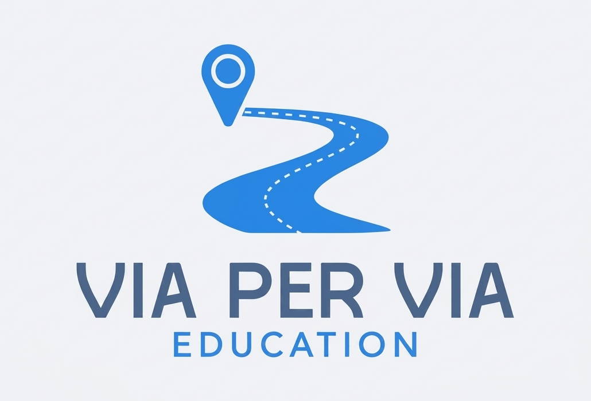

Ogni strada ha una storia. Gli studenti la cercano, la rielaborano e la condividono: ricerca, competenze digitali e senso civico in un unico percorso.
Gli studenti scelgono liberamente una via o una piazza della loro città. Ne esplorano la storia — chi era il personaggio cui è intitolata, perché porta quel nome — ma anche la vita che oggi ci scorre dentro: i personaggi che vi abitano, gli avvenimenti recenti che l'hanno caratterizzata, le storie ancora da scoprire.
Il percorso di ricerca — condotto su fonti diverse, rielaborato con parole proprie — si conclude con la creazione di una pagina web che entra a far parte di un database nazionale sul patrimonio stradale italiano.
Chi lo porta avantiMi chiamo Franco Tamoni, laureato con lode in Filosofia e da oltre dieci anni impegnato nell'insegnamento e nella formazione. Animatore digitale, mi occupo da sempre di tecnologia al servizio delle persone — non come fine, ma come strumento che amplia le possibilità umane. Vivo e lavoro a Ferrara.
«Ogni strada racconta una storia. Via Per Via insegna agli studenti a leggerla.»
Ogni studente (o piccolo gruppo) sceglie liberamente una strada o piazza della propria città, seguendo curiosità o interesse personale.
Si esplora la storia dietro il nome: libri, archivi, siti web, testimonianze orali, interviste a esperti locali. Tutto rielaborato con parole proprie.
I materiali vengono organizzati in una pagina web con testo, mappa interattiva, immagini e — facoltativamente — un'intervista audio o video.
La pagina viene inviata a viapervia.education e diventa parte del patrimonio collettivo, accessibile a tutta la comunità.
Gli studenti sviluppano appartenenza al proprio territorio, comprendendo la storia della comunità in cui vivono attraverso le sue strade.
Creare una pagina web, usare mappe interattive, gestire materiali multimediali: competenze applicate, non simulate in esercizi astratti.
Il progetto attraversa italiano, storia, geografia, arte e educazione civica in modo naturale, senza forzature curricolari.
Ogni studente lavora al proprio livello: la scelta è libera, la profondità adattabile, il contributo sempre valido e valorizzato.
Il lavoro non finisce nel cassetto: entra in un database pubblico e può raggiungere la comunità locale, le Pro Loco, il Comune.
Valutare le fonti, distinguere informazioni attendibili, sintetizzare e rielaborare: un antidoto al copia-incolla, fin dai primi anni.
Il progetto è strutturalmente flessibile: si adatta ai livelli di competenza, agli strumenti disponibili e al tempo che ogni classe può dedicargli.
Ricerca guidata, pagine semplici, forte componente grafica e narrativa
Ricerca più autonoma, approfondimenti storici, introduzione al coding HTML
Ricerche complesse, interviste strutturate, produzione video, riflessioni critiche
Scopri come funziona il progetto nel dettaglio, oppure guarda subito come appare il lavoro di una classe.
Via Per Via Education è un progetto modulare, adattabile a ogni ordine e grado, che guida gli studenti nella scoperta del patrimonio storico e culturale della propria città attraverso ricerca, scrittura e tecnologie digitali.
Il progetto invita gli studenti a scegliere liberamente una via o una piazza della loro città e a indagare la storia del personaggio, dell'evento o del luogo alla base dell'intitolazione. Il risultato è una pagina web personale che raccoglie testi originali, una mappa interattiva, immagini e, facoltativamente, interviste audio o video a esperti locali.
Le pagine vengono poi inviate al sito nazionale www.viapervia.education, dove entrano in un database pubblico, dando al lavoro degli studenti una visibilità e un impatto concreti, al di là delle mura scolastiche.
Il progetto si sviluppa in quattro fasi principali, su un arco di 4–8 settimane:
Il progetto nasce nell'alveo dell'Educazione Civica ma attraversa naturalmente molte discipline:
Via Per Via non è un esercizio di copia-incolla. Il testo "...per via" deve essere scritto con parole proprie, a partire da fonti diverse e verificate. Questo approccio sviluppa il pensiero critico, la capacità di valutare le fonti e di costruire un punto di vista personale sui temi trattati.
Il progetto ha ampi margini di personalizzazione: gli studenti più capaci possono essere sfidati con ricerche approfondite; chi ha bisogno di supporto può lavorare con materiale semplificato e maggiore guida. La struttura è inclusiva per definizione.
Le pagine create possono diventare una vera risorsa per la comunità: associazioni locali, Pro Loco, Comuni, guide turistiche. Il coinvolgimento del consiglio comunale dei ragazzi può trasformare il progetto in un atto concreto di cittadinanza attiva, portando all'attenzione degli amministratori locali il lavoro svolto dagli studenti.
Chi aderisce al progetto riceve un kit di materiali pronti all'uso. Al suo interno ci sono tre Unità di Apprendimento — una per ogni ordine scolastico — pensate come punto di partenza che ogni insegnante può adattare alla via scelta, al consiglio di classe e al contesto territoriale.
Ogni UDA include competenze chiave europee, traguardi di sviluppo delle competenze, fasi operative dettagliate, indicazioni metodologiche e rubriche di valutazione.
I materiali prodotti dagli studenti vengono condivisi con licenza Creative Commons BY-NC-SA: è consentita la condivisione, la modifica e l'utilizzo non commerciale, con attribuzione degli autori originali e condivisione sotto la stessa licenza. La scuola mantiene la titolarità del progetto; gli studenti e gli insegnanti conservano i diritti sulle proprie creazioni individuali.
Questa pagina riproduce il risultato finale di un percorso Via Per Via. Ogni classe o gruppo realizzerà una pagina simile, dedicata a una via o piazza della propria città. I contenuti grafici e multimediali sono indicativi.
Questa via si chiama così per via di Antenore Magri, un pittore che viveva a Ferrara. È nato il 22 gennaio 1907 ed è morto il 26 maggio 1978, sempre a Ferrara. Tutta la sua vita è rimasta in questa città.
Da giovane ha studiato alla Scuola d'Arte Dosso Dossi, che esiste ancora oggi. Per un po' ha lavorato insieme a suo padre a dipingere le pareti delle ville — noi non sapevamo che esistesse questo mestiere! Però quello che gli piaceva davvero era dipingere quadri, e ha cominciato ad andare alle mostre d'arte.
Una cosa che ci ha sorpreso è che Magri ha fatto parte di un gruppo di pittori futuristi, il gruppo Savarè. I futuristi dipingevano in modo molto moderno per l'epoca. Grazie a loro ha conosciuto Corrado Forlin, un altro pittore famoso. Nel 1942 il suo nome è apparso nel catalogo della Biennale di Venezia, che è una delle mostre d'arte più importanti del mondo.
Nel 1944 la guerra ha distrutto la sua casa e lui con la famiglia ha dovuto andare via. Secondo noi questa è stata la cosa più difficile della sua vita. Dopo la guerra ha continuato a dipingere, ma i suoi quadri sono diventati più tranquilli e silenziosi.
Nel 1957 ha fatto una grande mostra tutta sua a Venezia. Da quel momento ha esposto i suoi quadri in tutta Italia. Ha anche aperto una galleria d'arte, quindi faceva sia il pittore che il gallerista.
Gli anni Sessanta sono stati quelli in cui dipingeva meglio, almeno secondo gli esperti. Anche a noi piacciono molto i suoi quadri di quel periodo.
Secondo noi è giusto che gli abbiano dedicato una via. Magri ha vissuto la guerra, ha perso la casa, ma non ha smesso di dipingere. I suoi quadri raccontano com'era Ferrara nel Novecento, e questo è importante per non dimenticare.
Fonti consultate
📌 Ferrara (FE), Emilia-Romagna · Fonte: OpenStreetMap (licenza ODbL)
Ogni clic porta a una pagina diversa, selezionata a caso tra i contributi reali delle scuole partecipanti.